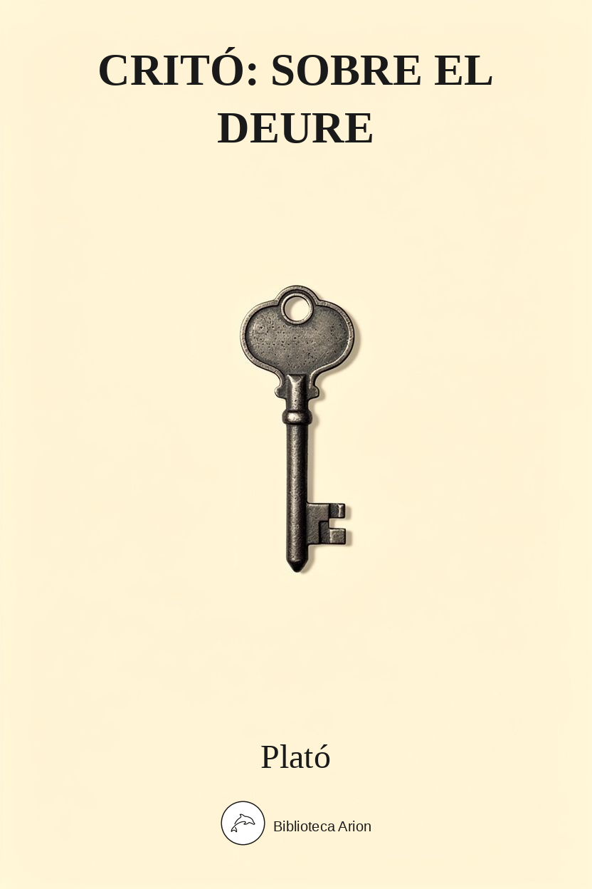

EPUBCritó
Κρίτων
Diàleg platònic ambientat a la presó d'Atenes, on Sòcrates espera l'execució. El seu amic Critó li proposa fugir, però Sòcrates refusa, argumentant que cal obeir les lleis de la ciutat fins i tot quan ens perjudiquen. És un text fonamental sobre l'ètica del deure, el contracte social i la relació entre l'individu i l'Estat. El diàleg presenta la cèlebre prosopopeia de les Lleis d'Atenes, que parlen en primera persona per defensar l'autoritat de la polis.
Crito — Plató
Autor: Plató (Plato) Font: Project Gutenberg #1657 Llengua: anglès (traducció de Benjamin Jowett)
This etext was prepared by Sue Asscher asschers@aia.net.au
CRITO
by Plato
Translated by Benjamin Jowett
INTRODUCTION.
The Crito seems intended to exhibit the character of Socrates in one light only, not as the philosopher, fulfilling a divine mission and trusting in the will of heaven, but simply as the good citizen, who having been unjustly condemned is willing to give up his life in obedience to the laws of the state…
The days of Socrates are drawing to a close; the fatal ship has been seen off Sunium, as he is informed by his aged friend and contemporary Crito, who visits him before the dawn has broken; he himself has been warned in a dream that on the third day he must depart. Time is precious, and Crito has come early in order to gain his consent to a plan of escape. This can be easily accomplished by his friends, who will incur no danger in making the attempt to save him, but will be disgraced for ever if they allow him to perish. He should think of his duty to his children, and not play into the hands of his enemies. Money is already provided by Crito as well as by Simmias and others, and he will have no difficulty in finding friends in Thessaly and other places.
Socrates is afraid that Crito is but pressing upon him the opinions of the many: whereas, all his life long he has followed the dictates of reason only and the opinion of the one wise or skilled man. There was a time when Crito himself had allowed the propriety of this. And although some one will say ‘the many can kill us,’ that makes no difference; but a good life, in other words, a just and honourable life, is alone to be valued. All considerations of loss of reputation or injury to his children should be dismissed: the only question is whether he would be right in attempting to escape. Crito, who is a disinterested person not having the fear of death before his eyes, shall answer this for him. Before he was condemned they had often held discussions, in which they agreed that no man should either do evil, or return evil for evil, or betray the right. Are these principles to be altered because the circumstances of Socrates are altered? Crito admits that they remain the same. Then is his escape consistent with the maintenance of them? To this Crito is unable or unwilling to reply.
Socrates proceeds:–Suppose the Laws of Athens to come and remonstrate with him: they will ask ‘Why does he seek to overturn them?’ and if he replies, ‘they have injured him,’ will not the Laws answer, ‘Yes, but was that the agreement? Has he any objection to make to them which would justify him in overturning them? Was he not brought into the world and educated by their help, and are they not his parents? He might have left Athens and gone where he pleased, but he has lived there for seventy years more constantly than any other citizen.’ Thus he has clearly shown that he acknowledged the agreement, which he cannot now break without dishonour to himself and danger to his friends. Even in the course of the trial he might have proposed exile as the penalty, but then he declared that he preferred death to exile. And whither will he direct his footsteps? In any well-ordered state the Laws will consider him as an enemy. Possibly in a land of misrule like Thessaly he may be welcomed at first, and the unseemly narrative of his escape will be regarded by the inhabitants as an amusing tale. But if he offends them he will have to learn another sort of lesson. Will he continue to give lectures in virtue? That would hardly be decent. And how will his children be the gainers if he takes them into Thessaly, and deprives them of Athenian citizenship? Or if he leaves them behind, does he expect that they will be better taken care of by his friends because he is in Thessaly? Will not true friends care for them equally whether he is alive or dead?
Finally, they exhort him to think of justice first, and of life and children afterwards. He may now depart in peace and innocence, a sufferer and not a doer of evil. But if he breaks agreements, and returns evil for evil, they will be angry with him while he lives; and their brethren the Laws of the world below will receive him as an enemy. Such is the mystic voice which is always murmuring in his ears.
That Socrates was not a good citizen was a charge made against him during his lifetime, which has been often repeated in later ages. The crimes of Alcibiades, Critias, and Charmides, who had been his pupils, were still recent in the memory of the now restored democracy. The fact that he had been neutral in the death-struggle of Athens was not likely to conciliate popular good-will. Plato, writing probably in the next generation, undertakes the defence of his friend and master in this particular, not to the Athenians of his day, but to posterity and the world at large.
Whether such an incident ever really occurred as the visit of Crito and the proposal of escape is uncertain: Plato could easily have invented far more than that (Phaedr.); and in the selection of Crito, the aged friend, as the fittest person to make the proposal to Socrates, we seem to recognize the hand of the artist. Whether any one who has been subjected by the laws of his country to an unjust judgment is right in attempting to escape, is a thesis about which casuists might disagree. Shelley (Prose Works) is of opinion that Socrates ‘did well to die,’ but not for the ‘sophistical’ reasons which Plato has put into his mouth. And there would be no difficulty in arguing that Socrates should have lived and preferred to a glorious death the good which he might still be able to perform. ‘A rhetorician would have had much to say upon that point.’ It may be observed however that Plato never intended to answer the question of casuistry, but only to exhibit the ideal of patient virtue which refuses to do the least evil in order to avoid the greatest, and to show his master maintaining in death the opinions which he had professed in his life. Not ‘the world,’ but the ‘one wise man,’ is still the paradox of Socrates in his last hours. He must be guided by reason, although her conclusions may be fatal to him. The remarkable sentiment that the wicked can do neither good nor evil is true, if taken in the sense, which he means, of moral evil; in his own words, ‘they cannot make a man wise or foolish.’
This little dialogue is a perfect piece of dialectic, in which granting the ‘common principle,’ there is no escaping from the conclusion. It is anticipated at the beginning by the dream of Socrates and the parody of Homer. The personification of the Laws, and of their brethren the Laws in the world below, is one of the noblest and boldest figures of speech which occur in Plato.
CRITO
by
Plato
Translated by Benjamin Jowett
PERSONS OF THE DIALOGUE: Socrates, Crito.
SCENE: The Prison of Socrates.
SOCRATES: Why have you come at this hour, Crito? it must be quite early.
CRITO: Yes, certainly.
SOCRATES: What is the exact time?
CRITO: The dawn is breaking.
SOCRATES: I wonder that the keeper of the prison would let you in.
CRITO: He knows me because I often come, Socrates; moreover. I have done him a kindness.
SOCRATES: And are you only just arrived?
CRITO: No, I came some time ago.
SOCRATES: Then why did you sit and say nothing, instead of at once awakening me?
CRITO: I should not have liked myself, Socrates, to be in such great trouble and unrest as you are–indeed I should not: I have been watching with amazement your peaceful slumbers; and for that reason I did not awake you, because I wished to minimize the pain. I have always thought you to be of a happy disposition; but never did I see anything like the easy, tranquil manner in which you bear this calamity.
SOCRATES: Why, Crito, when a man has reached my age he ought not to be repining at the approach of death.
CRITO: And yet other old men find themselves in similar misfortunes, and age does not prevent them from repining.
SOCRATES: That is true. But you have not told me why you come at this early hour.
CRITO: I come to bring you a message which is sad and painful; not, as I believe, to yourself, but to all of us who are your friends, and saddest of all to me.
SOCRATES: What? Has the ship come from Delos, on the arrival of which I am to die?
CRITO: No, the ship has not actually arrived, but she will probably be here to-day, as persons who have come from Sunium tell me that they have left her there; and therefore to-morrow, Socrates, will be the last day of your life.
SOCRATES: Very well, Crito; if such is the will of God, I am willing; but my belief is that there will be a delay of a day.
CRITO: Why do you think so?
SOCRATES: I will tell you. I am to die on the day after the arrival of the ship?
CRITO: Yes; that is what the authorities say.
SOCRATES: But I do not think that the ship will be here until to-morrow; this I infer from a vision which I had last night, or rather only just now, when you fortunately allowed me to sleep.
CRITO: And what was the nature of the vision?
SOCRATES: There appeared to me the likeness of a woman, fair and comely, clothed in bright raiment, who called to me and said: O Socrates,
‘The third day hence to fertile Phthia shalt thou go.’ (Homer, Il.)
CRITO: What a singular dream, Socrates!
SOCRATES: There can be no doubt about the meaning, Crito, I think.
CRITO: Yes; the meaning is only too clear. But, oh! my beloved Socrates, let me entreat you once more to take my advice and escape. For if you die I shall not only lose a friend who can never be replaced, but there is another evil: people who do not know you and me will believe that I might have saved you if I had been willing to give money, but that I did not care. Now, can there be a worse disgrace than this–that I should be thought to value money more than the life of a friend? For the many will not be persuaded that I wanted you to escape, and that you refused.
SOCRATES: But why, my dear Crito, should we care about the opinion of the many? Good men, and they are the only persons who are worth considering, will think of these things truly as they occurred.
CRITO: But you see, Socrates, that the opinion of the many must be regarded, for what is now happening shows that they can do the greatest evil to any one who has lost their good opinion.
SOCRATES: I only wish it were so, Crito; and that the many could do the greatest evil; for then they would also be able to do the greatest good– and what a fine thing this would be! But in reality they can do neither; for they cannot make a man either wise or foolish; and whatever they do is the result of chance.
CRITO: Well, I will not dispute with you; but please to tell me, Socrates, whether you are not acting out of regard to me and your other friends: are you not afraid that if you escape from prison we may get into trouble with the informers for having stolen you away, and lose either the whole or a great part of our property; or that even a worse evil may happen to us? Now, if you fear on our account, be at ease; for in order to save you, we ought surely to run this, or even a greater risk; be persuaded, then, and do as I say.
SOCRATES: Yes, Crito, that is one fear which you mention, but by no means the only one.
CRITO: Fear not–there are persons who are willing to get you out of prison at no great cost; and as for the informers they are far from being exorbitant in their demands–a little money will satisfy them. My means, which are certainly ample, are at your service, and if you have a scruple about spending all mine, here are strangers who will give you the use of theirs; and one of them, Simmias the Theban, has brought a large sum of money for this very purpose; and Cebes and many others are prepared to spend their money in helping you to escape. I say, therefore, do not hesitate on our account, and do not say, as you did in the court (compare Apol.), that you will have a difficulty in knowing what to do with yourself anywhere else. For men will love you in other places to which you may go, and not in Athens only; there are friends of mine in Thessaly, if you like to go to them, who will value and protect you, and no Thessalian will give you any trouble. Nor can I think that you are at all justified, Socrates, in betraying your own life when you might be saved; in acting thus you are playing into the hands of your enemies, who are hurrying on your destruction. And further I should say that you are deserting your own children; for you might bring them up and educate them; instead of which you go away and leave them, and they will have to take their chance; and if they do not meet with the usual fate of orphans, there will be small thanks to you. No man should bring children into the world who is unwilling to persevere to the end in their nurture and education. But you appear to be choosing the easier part, not the better and manlier, which would have been more becoming in one who professes to care for virtue in all his actions, like yourself. And indeed, I am ashamed not only of you, but of us who are your friends, when I reflect that the whole business will be attributed entirely to our want of courage. The trial need never have come on, or might have been managed differently; and this last act, or crowning folly, will seem to have occurred through our negligence and cowardice, who might have saved you, if we had been good for anything; and you might have saved yourself, for there was no difficulty at all. See now, Socrates, how sad and discreditable are the consequences, both to us and you. Make up your mind then, or rather have your mind already made up, for the time of deliberation is over, and there is only one thing to be done, which must be done this very night, and if we delay at all will be no longer practicable or possible; I beseech you therefore, Socrates, be persuaded by me, and do as I say.
SOCRATES: Dear Crito, your zeal is invaluable, if a right one; but if wrong, the greater the zeal the greater the danger; and therefore we ought to consider whether I shall or shall not do as you say. For I am and always have been one of those natures who must be guided by reason, whatever the reason may be which upon reflection appears to me to be the best; and now that this chance has befallen me, I cannot repudiate my own words: the principles which I have hitherto honoured and revered I still honour, and unless we can at once find other and better principles, I am certain not to agree with you; no, not even if the power of the multitude could inflict many more imprisonments, confiscations, deaths, frightening us like children with hobgoblin terrors (compare Apol.). What will be the fairest way of considering the question? Shall I return to your old argument about the opinions of men?–we were saying that some of them are to be regarded, and others not. Now were we right in maintaining this before I was condemned? And has the argument which was once good now proved to be talk for the sake of talking–mere childish nonsense? That is what I want to consider with your help, Crito:–whether, under my present circumstances, the argument appears to be in any way different or not; and is to be allowed by me or disallowed. That argument, which, as I believe, is maintained by many persons of authority, was to the effect, as I was saying, that the opinions of some men are to be regarded, and of other men not to be regarded. Now you, Crito, are not going to die to-morrow–at least, there is no human probability of this, and therefore you are disinterested and not liable to be deceived by the circumstances in which you are placed. Tell me then, whether I am right in saying that some opinions, and the opinions of some men only, are to be valued, and that other opinions, and the opinions of other men, are not to be valued. I ask you whether I was right in maintaining this?
CRITO: Certainly.
SOCRATES: The good are to be regarded, and not the bad?
CRITO: Yes.
SOCRATES: And the opinions of the wise are good, and the opinions of the unwise are evil?
CRITO: Certainly.
SOCRATES: And what was said about another matter? Is the pupil who devotes himself to the practice of gymnastics supposed to attend to the praise and blame and opinion of every man, or of one man only–his physician or trainer, whoever he may be?
CRITO: Of one man only.
SOCRATES: And he ought to fear the censure and welcome the praise of that one only, and not of the many?
CRITO: Clearly so.
SOCRATES: And he ought to act and train, and eat and drink in the way which seems good to his single master who has understanding, rather than according to the opinion of all other men put together?
CRITO: True.
SOCRATES: And if he disobeys and disregards the opinion and approval of the one, and regards the opinion of the many who have no understanding, will he not suffer evil?
CRITO: Certainly he will.
SOCRATES: And what will the evil be, whither tending and what affecting, in the disobedient person?
CRITO: Clearly, affecting the body; that is what is destroyed by the evil.
SOCRATES: Very good; and is not this true, Crito, of other things which we need not separately enumerate? In questions of just and unjust, fair and foul, good and evil, which are the subjects of our present consultation, ought we to follow the opinion of the many and to fear them; or the opinion of the one man who has understanding? ought we not to fear and reverence him more than all the rest of the world: and if we desert him shall we not destroy and injure that principle in us which may be assumed to be improved by justice and deteriorated by injustice;–there is such a principle?
CRITO: Certainly there is, Socrates.
SOCRATES: Take a parallel instance:–if, acting under the advice of those who have no understanding, we destroy that which is improved by health and is deteriorated by disease, would life be worth having? And that which has been destroyed is–the body?
CRITO: Yes.
SOCRATES: Could we live, having an evil and corrupted body?
CRITO: Certainly not.
SOCRATES: And will life be worth having, if that higher part of man be destroyed, which is improved by justice and depraved by injustice? Do we suppose that principle, whatever it may be in man, which has to do with justice and injustice, to be inferior to the body?
CRITO: Certainly not.
SOCRATES: More honourable than the body?
CRITO: Far more.
SOCRATES: Then, my friend, we must not regard what the many say of us: but what he, the one man who has understanding of just and unjust, will say, and what the truth will say. And therefore you begin in error when you advise that we should regard the opinion of the many about just and unjust, good and evil, honorable and dishonorable.–‘Well,’ some one will say, ‘but the many can kill us.’
CRITO: Yes, Socrates; that will clearly be the answer.
SOCRATES: And it is true; but still I find with surprise that the old argument is unshaken as ever. And I should like to know whether I may say the same of another proposition–that not life, but a good life, is to be chiefly valued?
CRITO: Yes, that also remains unshaken.
SOCRATES: And a good life is equivalent to a just and honorable one–that holds also?
CRITO: Yes, it does.
SOCRATES: From these premisses I proceed to argue the question whether I ought or ought not to try and escape without the consent of the Athenians: and if I am clearly right in escaping, then I will make the attempt; but if not, I will abstain. The other considerations which you mention, of money and loss of character and the duty of educating one’s children, are, I fear, only the doctrines of the multitude, who would be as ready to restore people to life, if they were able, as they are to put them to death–and with as little reason. But now, since the argument has thus far prevailed, the only question which remains to be considered is, whether we shall do rightly either in escaping or in suffering others to aid in our escape and paying them in money and thanks, or whether in reality we shall not do rightly; and if the latter, then death or any other calamity which may ensue on my remaining here must not be allowed to enter into the calculation.
CRITO: I think that you are right, Socrates; how then shall we proceed?
SOCRATES: Let us consider the matter together, and do you either refute me if you can, and I will be convinced; or else cease, my dear friend, from repeating to me that I ought to escape against the wishes of the Athenians: for I highly value your attempts to persuade me to do so, but I may not be persuaded against my own better judgment. And now please to consider my first position, and try how you can best answer me.
CRITO: I will.
SOCRATES: Are we to say that we are never intentionally to do wrong, or that in one way we ought and in another way we ought not to do wrong, or is doing wrong always evil and dishonorable, as I was just now saying, and as has been already acknowledged by us? Are all our former admissions which were made within a few days to be thrown away? And have we, at our age, been earnestly discoursing with one another all our life long only to discover that we are no better than children? Or, in spite of the opinion of the many, and in spite of consequences whether better or worse, shall we insist on the truth of what was then said, that injustice is always an evil and dishonour to him who acts unjustly? Shall we say so or not?
CRITO: Yes.
SOCRATES: Then we must do no wrong?
CRITO: Certainly not.
SOCRATES: Nor when injured injure in return, as the many imagine; for we must injure no one at all? (E.g. compare Rep.)
CRITO: Clearly not.
SOCRATES: Again, Crito, may we do evil?
CRITO: Surely not, Socrates.
SOCRATES: And what of doing evil in return for evil, which is the morality of the many–is that just or not?
CRITO: Not just.
SOCRATES: For doing evil to another is the same as injuring him?
CRITO: Very true.
SOCRATES: Then we ought not to retaliate or render evil for evil to any one, whatever evil we may have suffered from him. But I would have you consider, Crito, whether you really mean what you are saying. For this opinion has never been held, and never will be held, by any considerable number of persons; and those who are agreed and those who are not agreed upon this point have no common ground, and can only despise one another when they see how widely they differ. Tell me, then, whether you agree with and assent to my first principle, that neither injury nor retaliation nor warding off evil by evil is ever right. And shall that be the premiss of our argument? Or do you decline and dissent from this? For so I have ever thought, and continue to think; but, if you are of another opinion, let me hear what you have to say. If, however, you remain of the same mind as formerly, I will proceed to the next step.
CRITO: You may proceed, for I have not changed my mind.
SOCRATES: Then I will go on to the next point, which may be put in the form of a question:–Ought a man to do what he admits to be right, or ought he to betray the right?
CRITO: He ought to do what he thinks right.
SOCRATES: But if this is true, what is the application? In leaving the prison against the will of the Athenians, do I wrong any? or rather do I not wrong those whom I ought least to wrong? Do I not desert the principles which were acknowledged by us to be just–what do you say?
CRITO: I cannot tell, Socrates, for I do not know.
SOCRATES: Then consider the matter in this way:–Imagine that I am about to play truant (you may call the proceeding by any name which you like), and the laws and the government come and interrogate me: ‘Tell us, Socrates,’ they say; ‘what are you about? are you not going by an act of yours to overturn us–the laws, and the whole state, as far as in you lies? Do you imagine that a state can subsist and not be overthrown, in which the decisions of law have no power, but are set aside and trampled upon by individuals?’ What will be our answer, Crito, to these and the like words? Any one, and especially a rhetorician, will have a good deal to say on behalf of the law which requires a sentence to be carried out. He will argue that this law should not be set aside; and shall we reply, ‘Yes; but the state has injured us and given an unjust sentence.’ Suppose I say that?
CRITO: Very good, Socrates.
SOCRATES: ‘And was that our agreement with you?’ the law would answer; ‘or were you to abide by the sentence of the state?’ And if I were to express my astonishment at their words, the law would probably add: ‘Answer, Socrates, instead of opening your eyes–you are in the habit of asking and answering questions. Tell us,–What complaint have you to make against us which justifies you in attempting to destroy us and the state? In the first place did we not bring you into existence? Your father married your mother by our aid and begat you. Say whether you have any objection to urge against those of us who regulate marriage?’ None, I should reply. ‘Or against those of us who after birth regulate the nurture and education of children, in which you also were trained? Were not the laws, which have the charge of education, right in commanding your father to train you in music and gymnastic?’ Right, I should reply. ‘Well then, since you were brought into the world and nurtured and educated by us, can you deny in the first place that you are our child and slave, as your fathers were before you? And if this is true you are not on equal terms with us; nor can you think that you have a right to do to us what we are doing to you. Would you have any right to strike or revile or do any other evil to your father or your master, if you had one, because you have been struck or reviled by him, or received some other evil at his hands?–you would not say this? And because we think right to destroy you, do you think that you have any right to destroy us in return, and your country as far as in you lies? Will you, O professor of true virtue, pretend that you are justified in this? Has a philosopher like you failed to discover that our country is more to be valued and higher and holier far than mother or father or any ancestor, and more to be regarded in the eyes of the gods and of men of understanding? also to be soothed, and gently and reverently entreated when angry, even more than a father, and either to be persuaded, or if not persuaded, to be obeyed? And when we are punished by her, whether with imprisonment or stripes, the punishment is to be endured in silence; and if she lead us to wounds or death in battle, thither we follow as is right; neither may any one yield or retreat or leave his rank, but whether in battle or in a court of law, or in any other place, he must do what his city and his country order him; or he must change their view of what is just: and if he may do no violence to his father or mother, much less may he do violence to his country.’ What answer shall we make to this, Crito? Do the laws speak truly, or do they not?
CRITO: I think that they do.
SOCRATES: Then the laws will say: ‘Consider, Socrates, if we are speaking truly that in your present attempt you are going to do us an injury. For, having brought you into the world, and nurtured and educated you, and given you and every other citizen a share in every good which we had to give, we further proclaim to any Athenian by the liberty which we allow him, that if he does not like us when he has become of age and has seen the ways of the city, and made our acquaintance, he may go where he pleases and take his goods with him. None of us laws will forbid him or interfere with him. Any one who does not like us and the city, and who wants to emigrate to a colony or to any other city, may go where he likes, retaining his property. But he who has experience of the manner in which we order justice and administer the state, and still remains, has entered into an implied contract that he will do as we command him. And he who disobeys us is, as we maintain, thrice wrong: first, because in disobeying us he is disobeying his parents; secondly, because we are the authors of his education; thirdly, because he has made an agreement with us that he will duly obey our commands; and he neither obeys them nor convinces us that our commands are unjust; and we do not rudely impose them, but give him the alternative of obeying or convincing us;–that is what we offer, and he does neither.
‘These are the sort of accusations to which, as we were saying, you, Socrates, will be exposed if you accomplish your intentions; you, above all other Athenians.’ Suppose now I ask, why I rather than anybody else? they will justly retort upon me that I above all other men have acknowledged the agreement. ‘There is clear proof,’ they will say, ‘Socrates, that we and the city were not displeasing to you. Of all Athenians you have been the most constant resident in the city, which, as you never leave, you may be supposed to love (compare Phaedr.). For you never went out of the city either to see the games, except once when you went to the Isthmus, or to any other place unless when you were on military service; nor did you travel as other men do. Nor had you any curiosity to know other states or their laws: your affections did not go beyond us and our state; we were your especial favourites, and you acquiesced in our government of you; and here in this city you begat your children, which is a proof of your satisfaction. Moreover, you might in the course of the trial, if you had liked, have fixed the penalty at banishment; the state which refuses to let you go now would have let you go then. But you pretended that you preferred death to exile (compare Apol.), and that you were not unwilling to die. And now you have forgotten these fine sentiments, and pay no respect to us the laws, of whom you are the destroyer; and are doing what only a miserable slave would do, running away and turning your back upon the compacts and agreements which you made as a citizen. And first of all answer this very question: Are we right in saying that you agreed to be governed according to us in deed, and not in word only? Is that true or not?’ How shall we answer, Crito? Must we not assent?
CRITO: We cannot help it, Socrates.
SOCRATES: Then will they not say: ‘You, Socrates, are breaking the covenants and agreements which you made with us at your leisure, not in any haste or under any compulsion or deception, but after you have had seventy years to think of them, during which time you were at liberty to leave the city, if we were not to your mind, or if our covenants appeared to you to be unfair. You had your choice, and might have gone either to Lacedaemon or Crete, both which states are often praised by you for their good government, or to some other Hellenic or foreign state. Whereas you, above all other Athenians, seemed to be so fond of the state, or, in other words, of us her laws (and who would care about a state which has no laws?), that you never stirred out of her; the halt, the blind, the maimed, were not more stationary in her than you were. And now you run away and forsake your agreements. Not so, Socrates, if you will take our advice; do not make yourself ridiculous by escaping out of the city.
‘For just consider, if you transgress and err in this sort of way, what good will you do either to yourself or to your friends? That your friends will be driven into exile and deprived of citizenship, or will lose their property, is tolerably certain; and you yourself, if you fly to one of the neighbouring cities, as, for example, Thebes or Megara, both of which are well governed, will come to them as an enemy, Socrates, and their government will be against you, and all patriotic citizens will cast an evil eye upon you as a subverter of the laws, and you will confirm in the minds of the judges the justice of their own condemnation of you. For he who is a corrupter of the laws is more than likely to be a corrupter of the young and foolish portion of mankind. Will you then flee from well-ordered cities and virtuous men? and is existence worth having on these terms? Or will you go to them without shame, and talk to them, Socrates? And what will you say to them? What you say here about virtue and justice and institutions and laws being the best things among men? Would that be decent of you? Surely not. But if you go away from well-governed states to Crito’s friends in Thessaly, where there is great disorder and licence, they will be charmed to hear the tale of your escape from prison, set off with ludicrous particulars of the manner in which you were wrapped in a goatskin or some other disguise, and metamorphosed as the manner is of runaways; but will there be no one to remind you that in your old age you were not ashamed to violate the most sacred laws from a miserable desire of a little more life? Perhaps not, if you keep them in a good temper; but if they are out of temper you will hear many degrading things; you will live, but how?–as the flatterer of all men, and the servant of all men; and doing what?–eating and drinking in Thessaly, having gone abroad in order that you may get a dinner. And where will be your fine sentiments about justice and virtue? Say that you wish to live for the sake of your children–you want to bring them up and educate them–will you take them into Thessaly and deprive them of Athenian citizenship? Is this the benefit which you will confer upon them? Or are you under the impression that they will be better cared for and educated here if you are still alive, although absent from them; for your friends will take care of them? Do you fancy that if you are an inhabitant of Thessaly they will take care of them, and if you are an inhabitant of the other world that they will not take care of them? Nay; but if they who call themselves friends are good for anything, they will–to be sure they will.
‘Listen, then, Socrates, to us who have brought you up. Think not of life and children first, and of justice afterwards, but of justice first, that you may be justified before the princes of the world below. For neither will you nor any that belong to you be happier or holier or juster in this life, or happier in another, if you do as Crito bids. Now you depart in innocence, a sufferer and not a doer of evil; a victim, not of the laws, but of men. But if you go forth, returning evil for evil, and injury for injury, breaking the covenants and agreements which you have made with us, and wronging those whom you ought least of all to wrong, that is to say, yourself, your friends, your country, and us, we shall be angry with you while you live, and our brethren, the laws in the world below, will receive you as an enemy; for they will know that you have done your best to destroy us. Listen, then, to us and not to Crito.’
This, dear Crito, is the voice which I seem to hear murmuring in my ears, like the sound of the flute in the ears of the mystic; that voice, I say, is humming in my ears, and prevents me from hearing any other. And I know that anything more which you may say will be vain. Yet speak, if you have anything to say.
CRITO: I have nothing to say, Socrates.
SOCRATES: Leave me then, Crito, to fulfil the will of God, and to follow whither he leads.
43a
SÒCRATES. Per què has vingut tan d’hora, Critó? Encara no és molt aviat? CRITÓ. Sí que ho és, sens dubte. SÒCRATES. Quina hora és exactament? CRITÓ. Molt d’hora encara. SÒCRATES. M’estranya que el guardià de la presó t’hagi volgut obeir. CRITÓ. Ja em coneix bé, Sòcrates, perquè vinc sovint per aquí, i a més l’he fet algun favor. SÒCRATES. Acabes d’arribar o fa temps? CRITÓ. Fa força temps.
43b
SÒCRATES. Llavors per què no m’has despertat immediatament, sinó que t’has quedat assegut en silenci? CRITÓ. Per Zeus, Sòcrates! Ni jo mateix voldria estar en tanta insomnia i tristor. Però fa temps que admiro com dorms tan plàcidament, i a propòsit no t’he despertat perquè passessis el temps el més agradablement possible. Sovint t’he envejat el caràcter durant tota la teva vida, però molt especialment en aquesta desgràcia que et toca viure, per la facilitat i serenitat amb què la portes. SÒCRATES. És que seria inadequat, Critó, irritar-se a la meva edat quan ja toca morir.
43c
CRITÓ. També altres de la teva edat, Sòcrates, es troben en desgràcies semblants, però l’edat no els impedeix gens irritar-se per la mala sort que els toca. SÒCRATES. Això és cert. Però per què has vingut tan d’hora? CRITÓ. Porto una notícia dolorosa, Sòcrates. No per a tu, segons em sembla, sinó per a mi i per a tots els teus amics: dolorosa i pesada, que crec que serà una de les més dures de suportar. SÒCRATES. Quina notícia? És que el vaixell ha arribat de Delos, i amb la seva arribada
43 d
he de morir? CRITÓ. Encara no ha arribat, però em sembla que arribarà avui, segons el que diuen uns que han vingut del cap Suni i l’han deixat allà. És evident, doncs, pels missatgers, que
Traducció de domini públic.
Notes
La serenitat de Sòcrates davant la mort
Sòcrates tenia setanta anys quan va ser condemnat a mort (399 aC). La seva tranquil·litat davant la mort és un tema recurrent en els diàlegs platònics, especialment al Fedó, on desenvolupa arguments sobre la immortalitat de l’ànima. Aquí, la serenitat és presentada com a fruit del seu caràcter filosòfic.
↩ Tornar al textEl vaixell de Delos
Cada any Atenes enviava un vaixell sagrat a Delos per commemorar el viatge de Teseu a Creta. Durant aquest període (theoria), cap execució podia tenir lloc a la ciutat. El judici de Sòcrates va coincidir amb la sortida del vaixell, i per això va haver d’esperar el seu retorn per ser executat.
Plató, Fedó 58a-c
↩ Tornar al text«Al tercer dia arribaràs a la fèrtil Ftia»
Citació d’Homer, Ilíada IX.363. Aquil·les amenaça de tornar a Ftia (la seva terra natal a Tessàlia) si no rep el que li correspon. Sòcrates interpreta el somni com un presagi: «Ftia» representa la seva pàtria celestial, el lloc on anirà l’ànima després de la mort.
↩ Tornar al textEl mètode socràtic
Sòcrates estableix el seu mètode: només seguir el raonament (logos) que, en examinar-lo, sembli millor. Aquest és el fonament de l’ètica socràtica: no actuar per emoció, por o opinió de la majoria, sinó per convicció racional.
↩ Tornar al textL'expert en justícia
Analogia recurrent en Plató: així com en medicina o gimnàstica seguim l’expert i no la majoria, en qüestions de justícia hem de seguir qui realment sap, no l’opinió popular. L’«únic» expert aquí és implícitament la raó filosòfica o, potser, la divinitat.
↩ Tornar al textViure bé (εὖ ζῆν)
Principi fonamental de l’ètica socràtica: no és simplement viure (τὸ ζῆν) el que s’ha de valorar, sinó viure bé (τὸ εὖ ζῆν). Sòcrates estableix una equivalència triple: viure bé = viure bellament (καλῶς) = viure justament (δικαίως). D’aquí es dedueix que una vida injusta no val la pena de ser viscuda, i per tant fugir injustament de la presó seria pitjor que morir.
Aristòtil, Ètica Nicomaquea I.4, on reprèn el concepte d’εὐδαιμονία
↩ Tornar al textNo respondre mai a la injustícia amb injustícia
Principi ètic fonamental del socratisme, revolucionari en el seu context. Contrastava amb l’ètica grega tradicional (ajudar els amics, perjudicar els enemics) i amb la llei del talió. Anticipava en certs aspectes l’ètica cristiana del perdó.
República 335d-e, on Sòcrates argumenta que mai no és just perjudicar ningú
↩ Tornar al textEl principi de no fer mal
La conclusió de l’argument: ni respondre a la injustícia amb injustícia, ni fer mal a ningú sota cap circumstància. Aquest principi és la base per rebutjar la fugida: fugir seria fer mal a les Lleis i a la ciutat.
↩ Tornar al textLa prosopopeia de les Lleis
Recurs retòric brillant: Sòcrates imagina les Lleis personificades que l’interpel·len. Aquest passatge és considerat un dels primers textos sobre la teoria del contracte social. Les Lleis argumenten tres punts: 1. Són com pares (han educat Sòcrates) 2. Hi ha un acord tàcit (en quedar-se, ha acceptat obeir-les) 3. La desobediència individual destrueix l’ordre social
↩ Tornar al textLa pàtria més sagrada que els pares
Idea central del pensament polític grec: la polis és anterior i superior a l’individu i a la família. El ciutadà deu la seva existència i educació a les lleis de la ciutat. Aquesta noció influirà en tot el pensament polític occidental.
↩ Tornar al textL'argument del consentiment tàcit
L’acord entre ciutadà i lleis no és explícit sinó tàcit: residir a la ciutat, participar en les seves institucions, tenir-hi fills, tot això implica acceptació de les lleis. Sòcrates, que mai no va sortir d’Atenes excepte per campanyes militars, és l’exemple perfecte d’aquest consentiment.
Locke, Segon tractat sobre el govern civil, que reprèn aquesta teoria
↩ Tornar al textLes Lleis de l'Hades
Les Lleis adverteixen que si Sòcrates fuig, les lleis divines de l’Hades (el món dels morts) tampoc no el rebran bé. La justícia no és només terrenal sinó còsmica. Aquesta idea connecta amb el mite escatològic del Fedó i de la República.
↩ Tornar al textEls coribants
Els coribants eren sacerdots de Cíbele que entraven en èxtasi ritual al so de les flautes. Sòcrates compara la força dels arguments de les Lleis amb aquesta possessió divina: els seus raonaments «ressonen» dins seu de manera tan potent que no pot escoltar cap altra cosa. És una imatge irònica: el filòsof més racional d’Atenes es descriu «posseït» per la raó.
↩ Tornar al textGlossari
- ὄρθρος (orthros)
-
Traducció: alba, matinada
El moment just abans de sortir el sol, la part més fosca de la matinada. Critó arriba a la presó en aquest moment per tenir temps de convèncer Sòcrates de fugir abans que els guardes estiguin en plena activitat.
↩ Tornar al text - πλοῖον (ploion)
-
Traducció: vaixell
El vaixell sagrat enviat a Delos per commemorar el viatge de Teseu. Durant el seu viatge cap execució podia tenir lloc a Atenes per motius de puresa religiosa. El retorn del vaixell significava la mort imminent de Sòcrates.
↩ Tornar al text - λόγος (logos)
-
Traducció: raonament, argument, paraula
Terme central de la filosofia grega amb múltiples significats: paraula, discurs, raonament, proporció, raó. Per a Sòcrates, el logos és el criteri últim de veritat: només cal seguir l'argument que, en examinar-lo, sembli millor. Aquesta primacia del raonament sobre l'emoció és fonamental en l'ètica socràtica.
↩ Tornar al text - εὖ ζῆν (eu zen)
-
Traducció: viure bé
No simplement viure, sinó viure bé, bellament i justament. Per als socràtics, la vida només té valor si és virtuosa. Aquest principi justifica que Sòcrates prefereixi morir justament que viure injustament. L'equació de Sòcrates és: viure bé = viure bellament = viure justament.
↩ Tornar al text - νόμοι (nomoi)
-
Traducció: lleis
Les lleis de la polis, personificades en el diàleg com a éssers que parlen en primera persona. Els nomoi són més que simples lleis escrites: inclouen tot el sistema legal, educatiu i moral de la ciutat. La seva autoritat prové del fet que han format el ciutadà des del naixement.
↩ Tornar al text - πατρίς (patris)
-
Traducció: pàtria
La terra dels pares, la ciutat natal. En el pensament grec, la pàtria és més sagrada que els pares mateixos perquè és l'origen últim de l'educació i la identitat del ciutadà. Desobeir les lleis de la pàtria és com agredir els propis pares.
↩ Tornar al text - κορυβαντιῶντες (korybantiantes)
-
Traducció: els qui celebren els ritus coribàntics
Els coribants eren sacerdots de la deessa Cíbele que entraven en estats d'èxtasi mistic acompanyats de música de flautes i tambors. Sòcrates compara la força irresistible dels arguments de les Lleis amb aquesta possessió religiosa: els raonaments ressonen dins seu de manera tan potent que no pot escoltar res més.
↩ Tornar al text